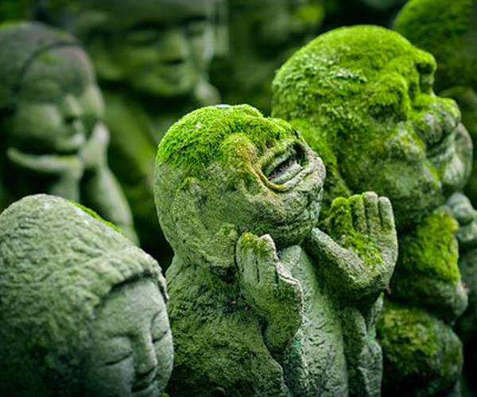
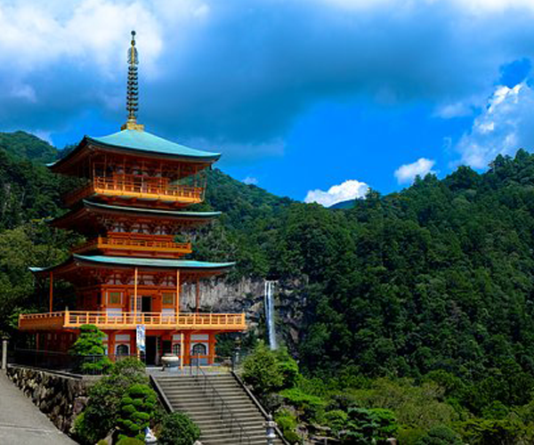
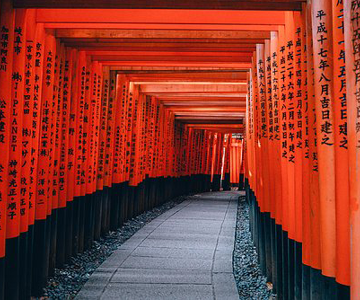

Galería de Paisajes
Paisajes
Retratos
Obras de arte
Jardines de Japón
Monte fuji

Jizos de Kyoto
Linternas de papel
Calles de Tokyo
Calles de Osaka
Hojas de Sakura

Gran santuario de Kumano Nachi Taisha

Tori de Fushimi Inari